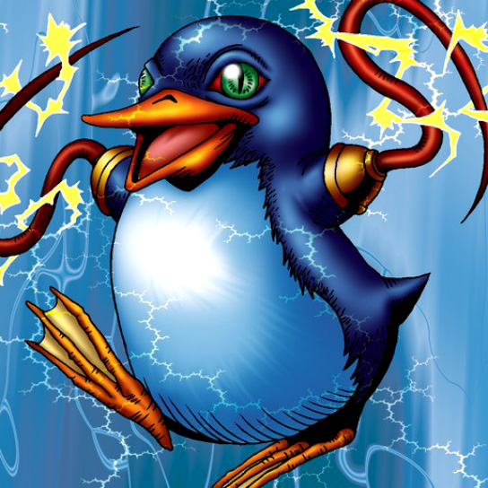

Bolt Penguin

STATS
ATK: 1100
DEF: 800DECK COST
Deck Cost per Card: 19Fusion List (49 Possible Fusions)
- Bolt Penguin + Kaiser Dragon = Twin-Headed Thunder Dragon
- Bolt Penguin + 30,000-Year White Turtle = Bolt Escargot
- Bolt Penguin + Air Marmot of Nefariousness = Tripwire Beast
- Bolt Penguin + Aqua Snake = Bolt Escargot
- Bolt Penguin + Baby Dragon = Thunder Dragon
- Bolt Penguin + Blackland Fire Dragon = Thunder Dragon
- Bolt Penguin + Boo Koo = The Immortal of Thunder
- Bolt Penguin + Change Slime = Bolt Escargot
- Bolt Penguin + Crawling Dragon #2 = Twin-Headed Thunder Dragon
- Bolt Penguin + Crawling Dragon = Twin-Headed Thunder Dragon
- Bolt Penguin + Curse of Dragon = Twin-Headed Thunder Dragon
- Bolt Penguin + Darkfire Dragon = Thunder Dragon
- Bolt Penguin + Dorover = Bolt Escargot
- Bolt Penguin + Dragon Zombie = Twin-Headed Thunder Dragon
- Bolt Penguin + Gaia the Dragon Champion = Twin-Headed Thunder Dragon
- Bolt Penguin + Gate Deeg = Tripwire Beast
- Bolt Penguin + Gruesome Goo = Bolt Escargot
- Bolt Penguin + Guardian of the Sea = Bolt Escargot
- Bolt Penguin + Kairyu-Shin = Twin-Headed Thunder Dragon
- Bolt Penguin + Kanikabuto = Bolt Escargot
- Bolt Penguin + Koumori Dragon = Thunder Dragon
- Bolt Penguin + Lesser Dragon = Thunder Dragon
- Bolt Penguin + Lucky Trinket = The Immortal of Thunder
- Bolt Penguin + Metal Dragon = Twin-Headed Thunder Dragon
- Bolt Penguin + Meteor Dragon = Twin-Headed Thunder Dragon
- Bolt Penguin + Milus Radiant = Tripwire Beast
- Bolt Penguin + Mystic Lamp = The Immortal of Thunder
- Bolt Penguin + Mystical Elf = The Immortal of Thunder
- Bolt Penguin + Obese Marmot of Nefariousness = Tripwire Beast
- Bolt Penguin + Ooguchi = Bolt Escargot
- Bolt Penguin + Parrot Dragon = Twin-Headed Thunder Dragon
- Bolt Penguin + Penguin Knight = Bolt Escargot
- Bolt Penguin + Petit Dragon = Thunder Dragon
- Bolt Penguin + Red-Eyes B. Dragon = Twin-Headed Thunder Dragon
- Bolt Penguin + Sea Kamen = Bolt Escargot
- Bolt Penguin + Sea King Dragon = Twin-Headed Thunder Dragon
- Bolt Penguin + Seiyaryu = Twin-Headed Thunder Dragon
- Bolt Penguin + Spike Seadra = Twin-Headed Thunder Dragon
- Bolt Penguin + Star Boy = Bolt Escargot
- Bolt Penguin + Stone D. = Twin-Headed Thunder Dragon
- Bolt Penguin + Sword Arm of Dragon = Twin-Headed Thunder Dragon
- Bolt Penguin + Thousand Dragon = Twin-Headed Thunder Dragon
- Bolt Penguin + Thunder Dragon = Twin-Headed Thunder Dragon
- Bolt Penguin + Time Wizard = The Immortal of Thunder
- Bolt Penguin + Turtle Tiger = Bolt Escargot
- Bolt Penguin + Twin Long Rods #2 = Bolt Escargot
- Bolt Penguin + Wicked Dragon with the Ersatz Head = Thunder Dragon
- Bolt Penguin + Yamatano Dragon Scroll = Thunder Dragon
- Bolt Penguin + Zone Eater = Bolt Escargot